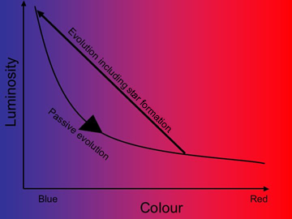

Individual galaxies generally evolve through one of three ways:
- Passive Evolution in which the galaxy remains undisturbed by mergers or interactions, and is devoid of ongoing star formation. These galaxies become steadily fainter and redder as the brighter, high mass (bluer) stars exit the main sequence and evolve into red giants. Otherwise, the galaxy remains unchanged. Isolated, early-type (elliptical and S0) galaxies generally evolve in this way.
- Interactions and Mergers which may or may not produce new stars. Interactions in which no new stars are formed result only in the evolution of the morphology of the galaxies. For example, a spiral galaxy may evolve into a S0 galaxy, or an S0 galaxy into an elliptical galaxy, without changing the colours and luminosities of the individual galaxies.
On the other hand, interactions that do result in the formation of new stars change the luminosity and colour as well as the morphology of each of the galaxies. Bursts of star formation increase the luminosities of the galaxies which, on average, become bluer in colour due to the presence of high mass stars in the young population. However, as the galaxies continue to evolve, their colour and luminosity will return to pre-interaction levels as these young, high mass stars move off the main sequence.
- Secular Evolution. In this case, spiral galaxies evolve in colour, luminosity and perhaps morphology through the action of internal processes such as the formation of spiral arms or bars.
Research into how the population of galaxies as a whole has evolved has provided some important insights into galaxy evolution. One of the most important results, the Butcher-Oemler effect, shows that on average, galaxies were bluer in the past than they are today. This indicates that the rate of star formation in the Universe has declined in recent times, and that the rate of galaxy evolution is slower today than in the past. These observations must now be reproduced by any successful model of galaxy formation and evolution.